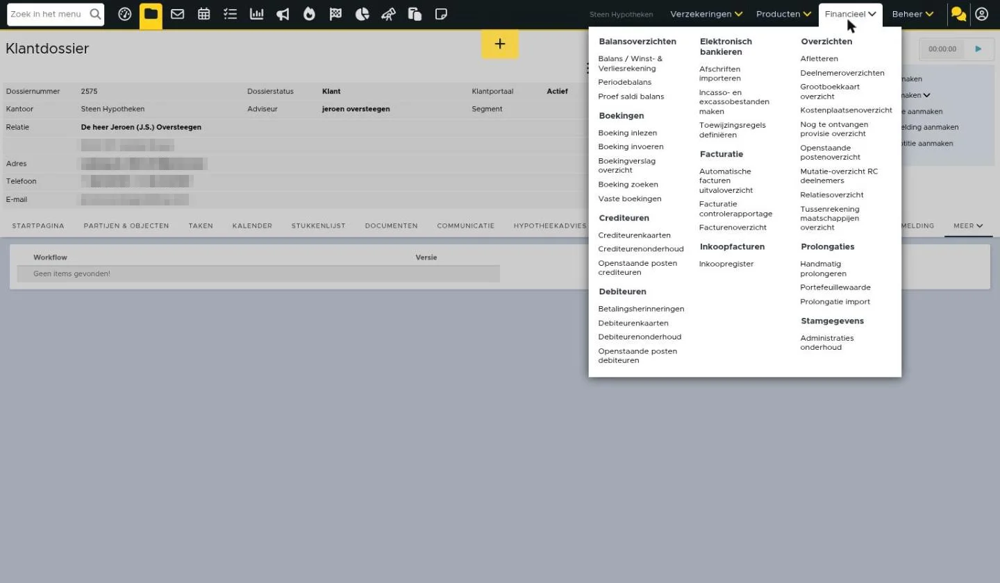
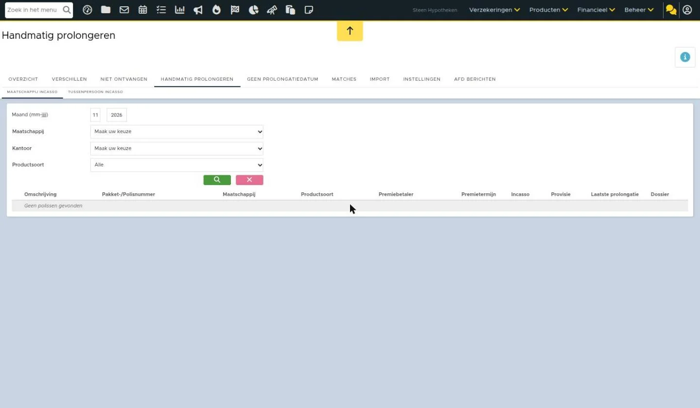

Handmatig prolongeren maatschappij incasso
Het kan zijn dat een maatschappij geen prolongatieberichten via ADN verstuurd. Je wilt wel dat de productkaart up-to-date blijft en wordt bijgewerkt. In deze situatie is het mogelijk om de producten handmatig te laten prolongeren. Dit is mogelijk als je werkt met ADN 3.0 en mutatievoorstellen. Hieronder lees je meer over hoe je maatschappij incasso posten handmatig kan prolongeren. Hier lees je meer over tussenpersoon incasso posten.
Handmatig prolongeren instellen
Om producten handmatig te laten prolongeren moet er verschillende zaken ingesteld staan, namelijk:
- De factuurinstelling in de productkaart dient op handmatig prolongeren ‘ja’ te staan
- In het rechterdeel dient een laatste prolongatiedatum ingevuld te zijn en deze dient niet langer dan een premietermijn geleden te zijn
- De polis heeft geen toekomstig royement voor of op de prolongatiedatum staan
- De ‘premietermijn per’ bepaalt over wanneer er een handmatige prolongatie wordt klaargezet in het tabblad Handmatig prolongeren in de ADN module
- Handmatig prolongeren kan niet ingesteld worden voor uitvaartverzekeringen


Het handmatig prolongeren kan ingesteld worden voor schade-, levens- en inkomensverzekeringen.
Batch maken
De producten waarbij handmatig prolongeren op ‘Ja’ staan en die verder voldoen aan bovenstaande voorwaarden komen te staan in de module Handmatig prolongeren. Deze kan je vinden via de de ADN module – Handmatig prolongeren. Indien je ook gebruik maakt van TP incasso dan staan hier twee verschillende tabbladen en kan je klikken op het tabblad Maatschappij incasso. Hier worden in totaal 50 polissen getoond (er is geen paginering). Met filtering kan je de gewenste polissen opzoeken.

Maatschappij en RC periode selecteren
Om deze handmatig te prolongeren dien je van de posten een batch te maken. Deze maak je per maatschappij en RC periode. Om posten te kunnen selecteren, moet je eerst een maatschappij en RC periode selecteren in het filter. De maatschappijen die getoond worden zijn maatschappijen die minimaal één polis/product op handmatig prolongeren hebben staan en incassowijze Maatschappij hebben.
Wanneer je een maatschappij en RC periode hebt geselecteerd, verschijnen er checkboxes voor de posten.

Prolongatiedatum instellen
Rechts staat een veld prolongatiedatum. Deze staat standaard op de eerste van de maand. Indien gewenst kan je deze datum aanpassen. Deze datum wordt gebruikt om laatste prolongatiedatum in de productkaart te vullen.

Posten selecteren en batch maken
Je selecteert de posten waarvan je een batch wilt maken. Je klikt vervolgens op de knop ‘Batch aanmaken van geselecteerde polissen’. De batch komt te staan in de ADN module.
Let op: het is niet mogelijk om tegelijkertijd meerdere batches van dezelfde maatschappij in dezelfde RC periode aan te maken. De ene batch moet eerst afgerond of verwijderd zijn, voordat je een andere batch kunt aanmaken.
Let op: de posten verdwijnen pas uit het tabblad Handmatig Prolongeren – Maatschappij incasso als de aangemaakte batch daadwerkelijk is afgerond. Zolang deze nog openstaat, blijven ook de posten nog zichtbaar in de module. Het is niet mogelijk om deze posten nogmaals te selecteren.
Batch aanpassen
Als je de batch hebt aangemaakt, kom je direct uit in de aangemaakte batch. In deze batch is het mogelijk om de premie en/of het prolongatie provisiebedrag aan te passen of de polis te royeren. Dit kan je bijvoorbeeld doen als je ziet dat de bedragen of polissen op het borderel afwijken.
Premie en/of prolongatie provisiebedrag aanpassen
Om de premie en/of prolongatie provisiebedrag aan te passen klik je op het koffertje in de regel van de post.

Vervolgens kies je voor ‘Premieopbouw aanpassen’. Dan krijg je een pop-up te zien waarin je de premiebedragen en prolongatie provisiebedrag kan aanpassen. De beschikbare velden in de pop-up zij afhankelijk van het type product. Vervolgens klik je op ‘Opslaan’ om de wijziging door te voeren.

Als je de premieopbouw wijzigt dan wordt ook direct de controle journaalpost aangepast. Ook wordt de premieopbouw in de productkaart hierop aangepast. Wanneer het een schadeproduct betreft dan wordt er een mutatievoorstel aangemaakt.
Royeren
Om het product te royeren, klik je op het koffertje en vervolgens op ‘Royeren’.

Je krijgt dan een pop-up te zien waarin je kunt aangeven of je de polis direct wilt royeren of vanaf een bepaalde datum. Ook kan je aangeven of je een rappeltaak wilt ontvangen en wanneer.

Als je de polis direct royeert dan verdwijnt deze uit de batch. Betreft het een schadeverzekering dan wordt er een mutatievoorstel aangemaakt. Royeer je de polis bijvoorbeeld een maand later dan blijft de post staan in de batch, omdat hij deze maand nog prolongeert. De volgende maand zal de post niet verschijnen niet de module Handmatig prolongeren.
Het is ook mogelijk om levensproducten vanuit de batch te royeren. Als je een polisonderdeel van een levensproduct royeert dan royeer je direct het gehele pakket. Royeer je een polis van een schadepakket dan royeer je alleen deze polis.
Mocht je de polis onterecht hebben geroyeerd dan kan je de polis vanuit de productkaart terug op lopend zetten. De polis komt dan terug in de module Handmatig prolongeren te staan. Je kan dan van deze polis een nieuwe batch maken (als de eerder aangemaakte batch is afgerond) of de eerder aangemaakte batch in zijn geheel verwijderen en opnieuw maken.
Batch verwerken
Als alle polissen kloppen en overal is een controle journaalpost aangemaakt dan kan je de batch verwerken/afronden. Dit doe je door te klikken op ‘Controlelijst afronden’.

Laatste prolongatiedatum bijgewerkt
Na het afronden van de controlelijst wordt de laatste prolongatiedatum bijgewerkt in de productkaart van de polis.
Boekingen
Na afronden wordt de batch ook geboekt. De controle journaalposten worden daadwerkelijk geboekt. Deze boekingen zijn terug te vinden in het klantdossier – product – tabblad Boekingen.
PDF specificatie
Van de batch wordt ook een PDF specificatie aangemaakt. Deze kan je terugvinden in de ADN module – tabblad PDF specificaties. De soort is ‘Prolongatie (handmatig)’.
Batch verwijderen
Zolang de batch nog niet is geboekt/afgerond, is het mogelijk om de batch te verwijderen. Dit vanuit het tabblad Overzicht – rode kruisje achter de batch. Als je de batch verwijdert dan komen de polissen terug open te staan in de module Handmatig prolongeren. Vanuit hier kan je eventueel een nieuwe batch aanmaken.
Handmatig prolongeren standaard voor maatschappij instellen
Het is mogelijk om het zo in te stellen dat bij bepaalde maatschappijen handmatig prolongeren automatisch op ‘Ja’ komt te staan bij het aanmaken van een nieuw product. Je stelt dit in via Beheer – Organisaties & Personen – betreffende maatschappij – tabblad Instellingen – Prolongaties. Let op: het instellen werkt dus niet met terugwerkende kracht, maar vanaf het moment van instellen wordt dit toegepast bij nieuw aangemaakte producten.

Zo ziet het er nu uit in eBlinqx Connect

